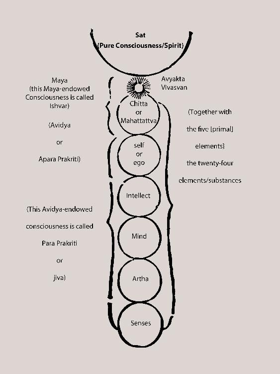

Illustration 5
[2 Translators' note: The asterisk here “*” denotes a footnote in the original [including the asterisk] in Bengali. The footnote is: * “Ma” - sound signifying non-existence, “ya” - sound signifying existence. That which happens when these two significances unite – that is verily “Maya” - the substance that cannot be ascertained/grasped. The Lord Himself has said: “mama mAyA duratyayA” [my Maya is difficult to go beyond [or: overcome]]. One cannot be victorious over it through battle. Its true nature cannot be known. This is what is written in “Chandi” [a particular spiritual scripture]. The Lord has spoken about the way that one can go beyond Maya or be victorious over it: “mAmeva ye prapadyante mAyAmetAṃ tayanti te” [those who come to Me go beyond it [Maya]]. One should not try to ascertain the form of Avyakta. One has to keep one's sight fixed directly and only on the Purusha [Supreme Person]. End of footnote.]
What has been presented here, with illustrations, about the path of yoga and the practice of sadhana – from this itself can the beginning practitioners get a fairly good mental grasp of this subject. Explaining all of the matter any further in scrutinizing detail is not of any use. This is because yoga is a matter of practice; nothing will come out of guessing from the information written down in a book. Because it is particularly necessary for the practitioner to become knowledgable about the three nadis – ida, pingala and sushmna – and the positions of the group of chakras, that is why just those things are presented in the illustrations. Nothing else has been presented. Through the performance of Kriya as instructed by Sadguru, in the ways that the sadhak will progress in sadhana – in the same ways will he/she gradually know and understand all of the matters of yoga on his/her own, by direct experience.
That which is necessary to know at first about yoga has been mentioned above [previously]. Yoga has to be taken up with body, mind and prana. As per slokas 13-14 of Chapter 5 of the Gita: disciplining the body and mind, moving prana according to the method instructed by guru – meaning: performing “prana-kriya,” one has to master it [prana] through disciplined practice. The “kriya-kshetra” [field of Kriya] are verily the six chakras. What is called “karma” [rites; righteous practices] is actually “prana-kriya” - the sadhana of the “avidya kshetra” [field where creation is happening]. If prana is not mastered, one cannot go beyond “karma” (the tri-guna condition) – meaning: the fulfillment of karma [rites] do not happen; and if the fulfillment of the karma [rites] do not come about, one cannot go above that [state] to the “vidya kshetra” (beyond the tri-guna condition). Therefore, one cannot become fit to be the recipient of Knowledge imbued with devotion. This is why the previously-mentioned descriptions have been geared towards only knowing the methods to gain mastery of prana; therefore only the introduction and descriptions of the six chakras have been given. Nothing has been said about the chakras above those [six].
Now, many Kriyavan sadhaks, having received instruction about “Sahasrar-Kriya”, want to know about: 1) the three bindus [points] connected to the sushumna named: “Kutastha,” “Shree” and “Mula”; 2) the three bindus situated within the center of the Sahasrar - “Jyeshtha,” “Vama” and “Raudri” - forming the main triangle; and 3) all about such things as the structure and characteristics of the six-triangle-field etc. For their erudition, Illustration No. 6 is provided here. By it, they will be able to get a somewhat basic idea about what they need to know. Everything cannot be shown in an illustration, and the drawing cannot be truly accurate. “Gurumukhi vidya” [knowledge learned from the mouth of the guru] can only be known by hearing the teachings of the guru directly from his mouth and through the performance of Kriya according to those instructions.
Illustration 6
This illustration shows – within the head:
(1) The three completely unbroken lines drawn from: “Mula” to mastak granthi, Mula to “Kutastha” and Kutastha to mastak granthi – that [together] is verily the sushumna nadi.
(2) The three “segmented” lines drawn from: Mula to “Jyeshtha,” Mula to “Vama” and Mula to “Raudri” - all extending to the Kutastha – those three segmented lines show [the pathways of] the tri-current flow of the purest forms of sattva guna, rajoguna and tamoguna, respectively.
(3) It was not possible to show in the drawing the downward facing sahasradal (thousand-petaled) lotus named Sahasrar. Only this has been shown [in the illustration]: the Sahasrar's front part, [specifically] the center – the area where there are the “Shree” bindu and the main triangle formed by Jyeshta-Vama-Raudri; the back side, [particularly] the foot stalk (the stem connection); [and] how the sushumna nadi comes from the Mula and goes through the stem connection into the triangle area in the center of the lotus, piercing the Shree bindu and reaches the Kutastha bindu.
(4) The three arms of the pathways of the purest forms of the three gunas [seen] on top of the main triangle comprise three triangles in the front and three triangles in the back, making it [a total of] six triangles. For this reason, the area of the head from the Kutastha to the Mula in its entirety is called “shattrikonakshetra” [six-triangle-field]. That six-triangle-field has: in the front – i) Kutastha-Jyeshtha-Vama, ii) Kutastha-Jyeshtha-Raudri and iii) Kutastha-Vama-Raudri – these three triangles. And in the back – iv) Mula-Jyeshtha-Vama, v) Mula-Jyeshta-Raudri and vi) Mula-Vama-Raudri – these three triangles. In total this forms six triangles.
In this Illustration No. 6 – the place where “Mula” is written, it is in that place in the head that the brahmarandhra and the “dasham dvar” [tenth door] are located, and it is in that very place that the Brahman-Shakti Mula Prakriti abides. Although that Mula Prakriti is without any attributes by Her True Nature, She is [at the same time] endowed with consciousness, prana and gunas. And it is She, in the form of Mula, Who is/becomes the Pulse and Power in Action; and in the form of that very Mula, being God's “Vishesha” [Special] Shakti or “Visargashakti,” She is verily the Cause of the manifestation of the world. When Mula becomes Active, Her gunas leave the state of equilibrium and wholeness/oneness and blossom into the three names and forms of “sattva,” “rajah” and “tamah,” and divide into three parts. Then the consciousness current, prana current, and the currents of the three gunas begin to flow from Her. Just as – in the way of pravritti [outward phenomena in action], from these three groups of currents the world becomes filled with restlessness and full of the pain of creation, preservation and destruction, and at the same time full of delusion/illusory attraction with no peace – in the same way, in the path of nivritti, all restlessness becomes Still, and the Peace of Nirvana and Bliss go on flowing endlessly.
Now, just as one has to be adept at the sadhana of the six chakras in order to become skilled in Sahasrar Kriya, similarly, one has to have knowledge of one's own subtlest of the subtle Self as “jivatman” [individual self], along with the aforementioned Mula, Jyeshtha, Vama, Raudri and such, whose nature and functions also have to be known. Without knowing [the aforementioned], one cannot progress or be successful in this sadhana. That is why the devotee sadhak Ramprasad has said in his song: “na janile jyeshtha mula, ke bhangbe tor dhula khela?” [“without knowing Jyeshtha Mula [etc.], who can break apart Your Dust-storm [Illusion] Game?”]. By knowing the mysteries of how the body of the jivatman comes about, [the knowledge of] all of the subtlest of subtle substances – particularly how incredibly subtle and completely beyond the senses the jivatman actually is – that Knowledge will be attained. Upon discerning this, the process of the emergence of the human body is described below.
The Process of the Emergence of the Human Body
[The Forming of the Human Body]
The process of the emergence of the Tree of the Universe in the form of the human body [as a microcosm] is the same as the process of the emergence of the macrocosm of the Tree of the Universe. (See the last part of the commentaries on slokas 1-4 of Chapter 15 of the [Bhagavad] Gita titled “Matters Necessary to Know.”) Everyone needs to know that. Knowing it, one can understand one's own being, and, thereby, if so desired, one becomes able to: educate oneself in the knowledge that is appropriate for taking oneself on the path of sadhana, become a person whose body is filled with spiritual feeling, cross the boundaries of Prakriti, and reach the Supreme Brahman from Which there is no return to [samsara] [alternate translation: and reach the Supreme Brahman and never have to repeat this process again].
After the seed of the father is issued into the womb of the mother, it mixes with the blood of the mother in the womb and becomes encapsulated by a covering made of blood. And that becomes enjoined with the mother's blood-producing nadi in the navel and transforms into a blood-seed egg. Afterwards, the capsule of blood changes into a sack made of skin – named “ulva”; and within that, from the mother's body itself, the power of consciousness [jnana-shakti], the power of the pranas [kriya-shakti], and the powers of the gunas [karma-shakti] combine with the fluid containing the eight elements which brings forth a liquid that begins to spread. That liquid is called “karanbari” [causal water] or “garbhodak” [primal water/ocean; or: water of life in the womb]. That seed, lying within the garbhodak, by being in contact with that “udak” or water becomes energized and aware, and then becomes “visargita” [formed] – meaning: divides into two, in the likeness of the [Sanskrit alphabet's] letter “visarga” - and therafter settles into a form where the two bindus [reside] on top of each other. The upper bindu is “Brahman-bindu” and the lower bindu is “Prakriti-bindu.” 3 [See note number 3 at the end of the paragraph.] The Brahman-bindu is Truth-Consciousness-Bliss and the Truth. In that, the “Rudropasthana” mantra's “ṛtaṃ,” “satyaṃ,” “paraṃ,” “purushaṃ” - these four “male” aspects are present. And the Prakriti-bindu is “sattva,” “rajah,” “tamah” or the “shaktis” [powers] of “jnana” [knowing], “kriya” [active energy or prana], “karma” (“dravya” [matter]) [work]. Her “jnana-shakti” is verily consciousness; [Her] “kriya-shakti”] is verily prana, and [Her] “dravya-shakti” [or: “karma-shakti”] is verily the “gunas.” When She [Prakriti-bindu] is in Her “dormant” state – meaning: the state when She is merged with Brahman – Her jnana-kriya-karma shaktis are lying merged in Them [in Union] – meaning: jnana remains merged in Them, kriya remains merged in jnana, and karma remains merged in kriya. When She awakens, She puts out Her jnana (creates or gives birth). Her jnana puts out kriya, and kriya puts out karma. This is verily the flowing out of the paths of nivritti and pravritti. And in Her, the “Rudropasthana” mantra's “kṛnchapingalaṃ,” “urdhalingaṃ,” “virupAkshaṃ,” “vishvarupaṃ” - these four “female” aspects of Brahman are present.
[3 Translators' note: The letter “visarga” of the Devnagari/Sanskrit alphabet is formed like the punctuation called “colon” in English - “ :”. [“Visarga” also means “bring out” [among other definitions].] The embryo/fetus will eventually take a sort of upside-down position. The “upper” and “lower” points of the “visarga” [or “Brahman-bindu” and “Prakriti-bindu,” respectively] refer to locations regarding the body in an upright position.]
The Brahman-bindu takes on the form of Brahman-Energy, pervades the inner and outer [aspects] of the Prakriti-bindu and abides in this way. Although the Prakriti-bindu is known to be smaller than the smallest, it is hollow (with openings) like a canal that with a waist and a stem. The opening of that is called “brahmarandhra.” The upward-mouth of that opening is called “sumerupranta” and the downward-mouth is called “kumerupranta.” [Translators' note: Hereafter, for sake of ease in wording, these two points will be referred to as either the “ends” or “sides” of “sumeru” and “kumeru.”] And it remains connected to the Brahman-bindu via the inexpressible “brahmasutra” [thread of Brahman] within the passage of the openings. Adjoined with that brahmasutra, the Para Shakti's Prana [Life-force] flows into the canal of the Prakriti-bindu, where She transforms that into the form of the sushumna nadi and the brahmasutra into the brahmanadi. (Consciousness is jnana-shakti; prana is kriya-shakti; and gunas are karma-shakti. The union of these three shaktis is how the Para Shakti is known as4 the “mukhya prana” [the Primary Current, or: the Original Life Current].
[4 Translators' note: There is a possible misprint here in the printed version of the original Bengali text regarding the phrase “known as the 'mukhya prana.'” The word erroneously written in Bengali is “abihita,” which means “not instituted.” That would make little sense in the context of the sentence or the paragraph. In similar contexts in other places in the text, the term is correctly written as “abhihita” [note the additional “h”]. “Abhihita” means: “known as.” The translators have taken it that the correct word in this case is “Abhihita” as it makes the statement correct and makes sense as well. The misprinted “abihita” is taken to be an easily made typographical error. The use of that term would be incongruous with the context of the sentence and the paragraph.]
“Jivatman” [person, individual] or “bhrun” [the embryo – in this case, treated as if in three dimensions: causal, subtle and physical]: Immeasurably smaller than the atom, the jivatman embryo, endowed with the “samskaras” [particular and individual potential characteristics that can become activated] of the powers of the seven “vyahrti[s]” [utterances/planes] and the samskaras of the twenty-four elements, is completely under the power of Prakriti, because of which it resides in a powerless/unmoving state (“avashaṃ prakṛitervashAt” [powerless/unmoving under the power of Prakriti] – Gita Chapter 9, sloka 8) in that subtlest of the subtle Prakriti-bindu. [“Bhuh,” “Bhuvah,” “Svah,” “Mahah,” “Janah,” “Tapah,” “Satyaṃ” - these seven are the seven “vyahrti[s]”; and [together with] the four types of powers – mind, intellect, ego, chitta [background consciousness] – comprising the “antahkarana” [inner operators]; the ten types of powers belonging to the “bahihkarana” [outer operators] – comprised of [five] organs of perception and [five] organs of action; the five types of powers of “prana” [currents of energy] - “prana,” “apana,” “vyana,” “samana,” and “udana”; and the five types of powers belonging to the subtle elements – earth, water, fire, air and space – these twenty-four types of powers together are called “tattva shakti” [powers of the fundamental substances.]]5 That jivatman residing within the Prakriti-bindu develops its body by receiving from the mother's body the ingredients of the food essence, which contain the eight substances, which go through the umbilical cord in the navel via the actions of the consciousness-power, prana-power and the guna-powers. [The eight substances contained in the food essence are: 1) blood, 2) skin, 3) muscle, 4) fat, 5) bone, 6) marrow, 7) reproductive fluid, and 8) plasma.]6 All of those ingredients build the “jivatman body” in three dimensions: 1) “karan sharir” [causal body], 2) “sukshma sharir” [subtle body] and 3) “sthula sharir” [physical body].
[5 and 6 Translators' note: The bracketed statements denoted by the note numbers in superscript are, in their entirety, in the original in Bengali and enclosed in brackets - “[ ]”. The internal brackets within the aforementioned statements, and the text within them, are by the translators, provided for the sake of clarification.]
Karan Sharir
[The Causal Body]
That Prakriti-bindu itself is the causal body of the jivatman or bhrun, comprised of three active powers/attributes: “pitrishakti” [active powers/attributes from the father], “matrishakti” [active powers/attributes from the mother] and “atmashakti” (the shakti from the jivatman itself) [active powers/attributes from the incarnating soul itself]. This is the hidden, finite form of “avidya” [ignorance; or: the phenomenal experience]. It is in seed form. It is from this that the subtle and the physical bodies come about. In this [causal] body, the jivatman remains in a “dormant” state, within the Supreme Subtle Mind, having only the subtlest awareness as its sense of personal self, and being the self believing itself to be the causal body, it is known as “praajna” [knower].
Sukhshma Sharir
[The Subtle Body]
[According to Shankaracharya, the subtle body is non-quintuplicated [not of the five-fold nature of the physical body], but is connected to the quintelemental (built) [body] for the sake of action and experiencing constant pleasure and pain, as well as the five organs of perception, the five elements of action, the five pranas, and mind and intellect. [The subtle body] is connected to these seventeen operative aspects. (The words “mind” and “intelligence” together usually refer to the entirety of the four-fold antahkarana.)]7
[7 Translators' note: The entire bracketed paragraph above is in the original in Bengali and enclosed in brackets - “[ ]”. The paragraph also contains statements enclosed in parentheses - “( )” - which are in the original as well. However, the internal brackets within the paragraph above and the text within them are by the translators, provided for the sake of clarification.]
Although that consciousness-filled, prana-filled and guna-endowed (meaning: filled with the powers of jnana, kriya, karma), smaller than the smallest Prakriti-bindu resides in a dormant state, because of the powers of the eight substances and jnana, kriya and karma from the mother's body raining upon it [the Prakriti-bindu], it gradually and progressively awakens. It goes on transforming from the causal [potential] condition to the active [kinetic] condition, and it becomes more and more endowed with attributes; and its energy continually increases. Because of the expansion of that energy, the powers of jnana, kriya and karma – established within – become stimulated (stir or become geared to act), and its [Prakriti-bindu's] samskaras [active characteristics] of the elemental powers also become awakened. The “Satyaṃ” vyahrti [utterance/plane] is its [Prakriti-bindu's] jnana-shakti, “Tapah” is its kriya-shakti, and the five vyahrtis named “Janah,” “Mahah,” “Svah,” “Bhuvah,” “Bhuh” are its karma-shakti or “dravya-shakti” [powers of matter]. The “satyam” vyahrti's place is at the “sumeru” end of the Prakriti-bindu, and the “tapah” vyahrti's place is at the “kumeru” end. And the five karma-shaktis named “Janah-Mahah-Svah-Bhuvah-Bhuh” reside in the location of the “Tapah” vyahrti, in a state of being merged with the kriya-shakti. Later, when the kriya-shakti's striving becomes more filled with intelligence (“abheeddhat tapasah” [rises out of intense striving]), at the “sumeru” side and within the jnana-shakti residing at the place of the “Satyam” vyahrti, the samskaras of the four powers of the antahkarana as well as the powers of the five organs of perception awaken. And at the place of “Tapah” vyahrti at the “kumeru” side, the five powers of action awaken in the aforementioned vyahrtis named “Janah-Mahah-Svah-Bhuvah-Bhuh,” giving rise to an extremely subtle and hollow bud/stem-like form. And within that: 1) ether, air, fire, water, earth – the samskaras of the powers of five subtle (non-quintuplicated) elements; 2) the samskaras of the five prana-vayu-shaktis named “udana,” “prana,” “samana,” “vyana,” and “apana”; and 3) the samskaras of the powers of “vak-pani-pada-upastha-payu” [mouth-hands-legs/feet-genitals-anus] – the five organs of action in their active [and subtle] modes – blossom forth, respectively, with the five karma-shaktis [powers of action].
After this, that bud/stem-enjoined Prakriti-bindu becomes transformed into the form of the jivatman's subtle body. The Prakriti-bindu becomes that subtle body's head; the bud/stem becomes the spinal column; canal-passageway throughout the spine becomes the sushumna nadi, the brahmasutra within the sushumna becomes the brahmanadi. The jnana-shakti resides in the head and the karma-shakti resides in the spine. And the kriya-shakti resides in the sushumna giving life to the jnana-shakti and karma-shakti and directs them [or: makes them active].
In that subtle body, the samskaras of the powers of the seven vyahrtis and the twenty-four primal element-powers awaken and become active, and then they take their own places. Those are:
“Vyahrti-shakti” [powers of the utterances/planes]: The samskaras of the two powers of the vyahrtis named “Satyaṃ,” and “Tapah” blossom in the head, at the sumeru end and the kumeru end, respectively. And the samskaras of the five-fold vyahrtis named “Janah-Mahah-Svah-Bhuvah-Bhuh” blossom in – respectively: the throat-center, the chest-center, the navel-center, the sexual organ-center and the anus area-center.
“Tattva-shakti” [primal element-powers]: The four powers of the antahkarana, namely “mind-intellect-ego-chitta [background consciousness]” and the five powers of the organs of perception, namely “eyes-ears-nose-tongue-skin” - the samskaras of these nine powers blossom in the jnana-shakti in the head. And 1) the five types of the powers of the primal subtle elements such as ether, air etc., 2) the powers of the five prana-vayus such as “udana,” “prana” etc., and 3) the five types of powers of the organs of action such as mouth, hands etc. – the samskaras of these fifteen powers blossom in the spine as the five karma-shaktis with the names of – respectively: “Janah-Mahah-Svah-Bhuvah-Bhuh.”
The jivatman or bhrun, together with the collective samskaras of the aforementioned powers of the vyahrtis and the powers of the primal subtle elements, permeates him/herself throughout the energy-filled subtle body; and as he/she feels [from the perception of this dimension] that the self is the subtle body, [the jivatman, in this state,] is called “taijas” [with life-energy; or: alive].
Because the subtle body is endowed with samskaras [potencies], it cannot be spoken about and is beyond the senses. It is verily this body with which the karma [consequences due to actions]-bound jivatman remains imprisoned in the stupor of illusion, bound in its enjoyments/pains, desires and the torrents of birth and death, and goes on suffering in this dizzying cycle.